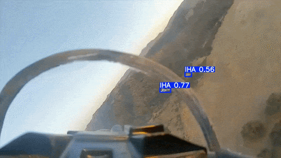

An AI Engineer building reliable, production-ready systems at scale.
I focus on computer vision and applied AI — designing, training, and deploying deep-learning systems that hold up in real-world conditions.
I’m currently an AI engineer at AYGAZ (Koç Group), where I’ve spent over a year shipping production vision systems — from real-time monitoring and inspection to AI-assisted data pipelines.
Before that, I built autonomous UAV systems as a two-time TEKNOFEST finalist, published IEEE research, shipped a TÜBİTAK-funded IoT product, and joined a NASA Space Apps global-nominee team.
I care about clean architecture, measurable performance, and systems that survive contact with production — on the edge as well as in the cloud.
Top-down drone imagery through a YOLO detector that localizes panels and flags dust, soiling, cracks and bird droppings — for real-time panel-health analytics on embedded hardware.
Onboard air-to-air detection: a real-time YOLO model locks onto rival aircraft from the drone’s own camera under fast motion and cluttered terrain — trained on Roboflow data, deployed on Raspberry Pi.
YOLO · Roboflow · Raspberry Pi · Real-time
onboard inference · code available on request

04 — IoT · Embedded · Mobile · LLM — 2024–2026 · No video, hardware product
WaterMate — Smart Hydration System
TÜBİTAK 2209-A funded IoT smart bottle: custom capacitive level sensor, IMU-based drinking-gesture recognition, offline SD logging, BLE-to-Firebase sync via a Flutter app, and a GPT-4o-mini coach for personalized hydration.
ESP32 · BLE · C++ · Flutter · Firebase · GPT-4o-mini
OpenCV, NumPy, Pandas, Ultralytics, Roboflow, Linux
Embedded & Spoken
ESP32, BLE, IMU, Flutter · Turkish (Native), English (B2)
/contact.
Let’s build something that runs in real time.
I’m open to full-time Computer Vision / AI and MLOps roles in Turkey and internationally. Fastest way to reach me is email — I usually reply within a day.